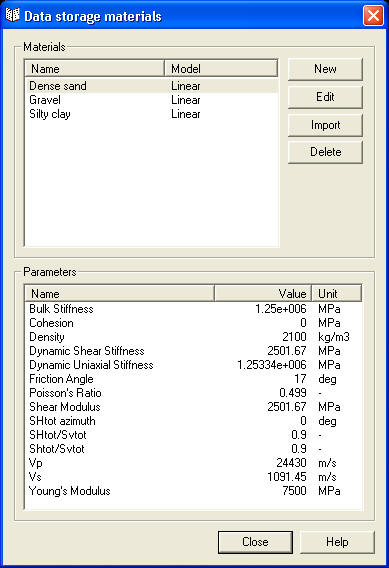
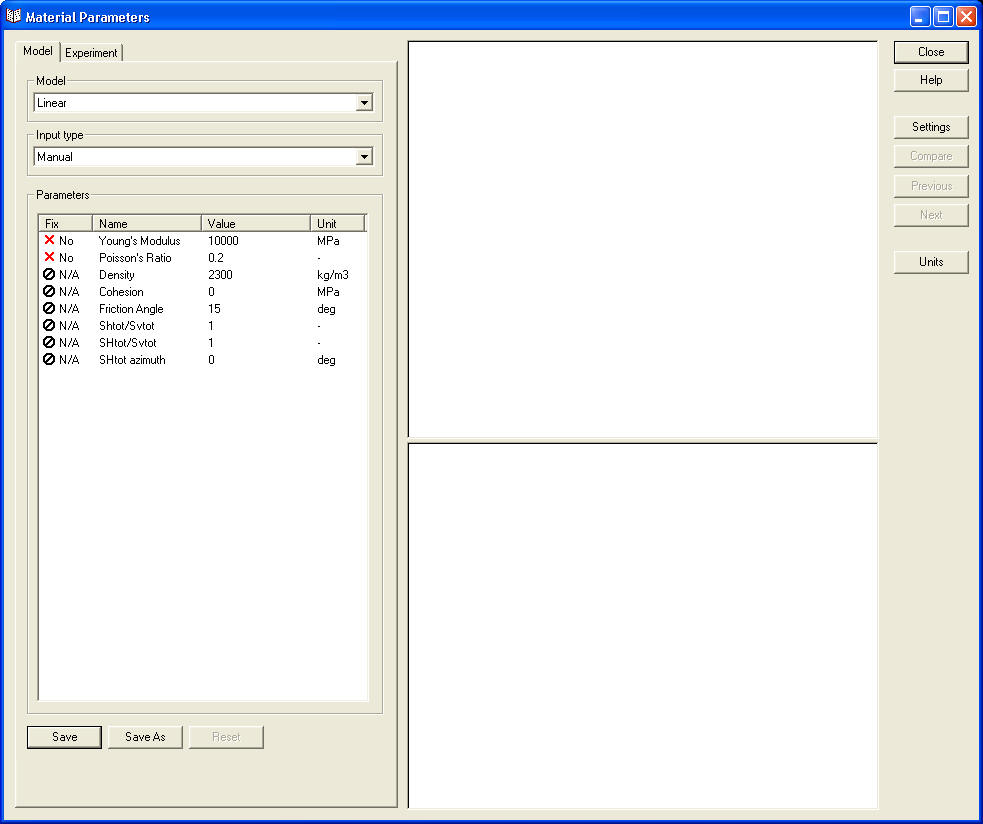

The rock materials currently held in the datastorage tree is displayed as a separate dialog as shown below:

The top pane in the dialog lists the names of all the material datasets that exist within the datastorage Rock material branch and their respective material type such as linear, Cam-clay or Mohr-Coulomb. The bottom pane shows the properties of the material highlighted in the top pane.
Pressing the New button will allow the creation of a new material dataset. A new dialog appears and the name of the new material is entered. Selecting OK then gives rise to the following dialog where all material parameters for the new material dataset can be entered. Once entered pressing Close will then prompt the user to save the new data. The new material will then appear in the data storage materials dialog.

Pressing the Edit button allows the parameters of the highlighted material to be changed using the same dialog as that shown above.
The Import button allows the import of materials from separate material library files. A dialog will appear allowing the user to navigate to the location of a Geomec material library file, this files have a gml file extension.
The delete button allows materials to be deleted from the datastorage Rock material branch.